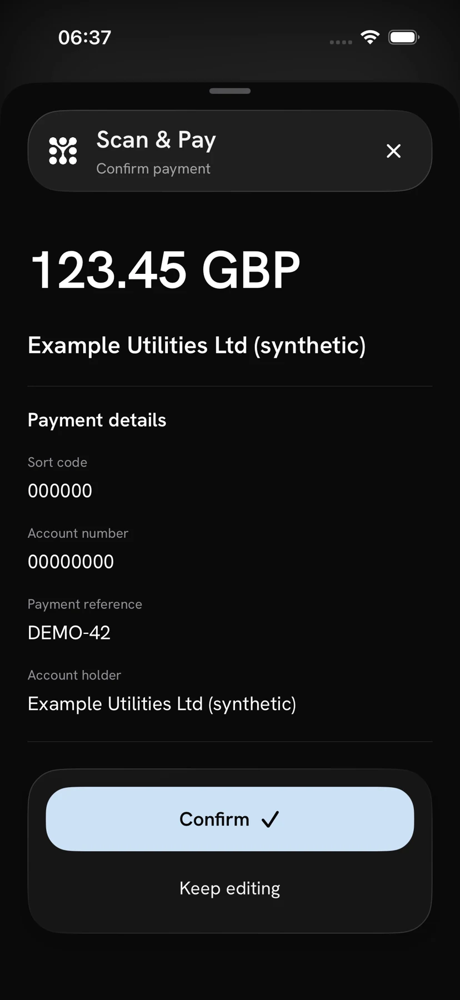
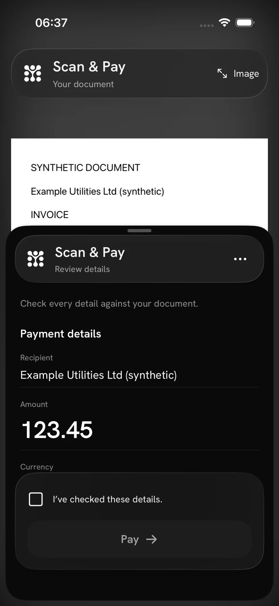

Scan & Pay / Open Banking Expo 2026
Paper invoices become reviewed payment drafts. Explore what native mobile, AI and spatial computing make possible.


Amounts. Recipients. Account details. References. An invoice already holds the information. We built two working proofs of concept to explore a more natural way to bring it into a payment journey.
One starts with your phone.
The other opens up the interface around you.
A native mobile phone flow that turns an image into editable details, with a deliberate review before confirmation.
Actual mobile phone UI. Synthetic invoice data.
Take a photo or import an image. The latest build also detects and straightens paper on device. You choose when to send it for extraction.
Recognising text is only the beginning. The useful part is connecting the right amount, destination and reference.
Issuer country, document language and bank-account country stay distinct. Required fields follow the payment route, not a guess based on language.
Keep UK sort codes and account numbers together. Preserve IBANs and printed payment references without inventing missing digits.
Keep recoverable fields, highlight missing requirements and let the user complete the draft.
Source results and user edits are stored separately, so a correction never rewrites the extraction evidence.
A second perspective
A separate Apple Vision Pro PoC brings accounts, scanning, payment review and activity into a spatial banking experience.
See demo accounts, available balances and the scanning area together in one interface.
Actual application views captured with the native UI preview renderer. These are app UI previews, not headset or passthrough captures. Balances and payments are demo data.
From the first image to the final review, the demo makes the system understandable to users, operators and the room.
The live companion shows observed stages, the selected provider and elapsed backend time. Private invoice details stay off the shared display.
Application capture from an isolated test session. The live mobile phone and companion display integration was separately verified on hardware.
Choose the method and model for the next scan. Inspect source results, supporting context and confirmed mobile edits.
Current method selector; invoice context shown with synthetic data.
One vision model reads the image and returns structured fields. Explored with OpenAI, Gemini, Mistral, Anthropic, Together and xAI.
Recognised text and layout are mapped with deterministic rules. Explored with Mistral OCR, Google, Azure and AWS.
Invoice-specific service output is mapped to a common payment draft. Explored with Google, Azure, AWS and Mindee.
A requested field schema guides a document service’s structured output.
Recognition and interpretation run as separate, measured stages.
For banks, fintechs and payment teams exploring what comes after manual entry.